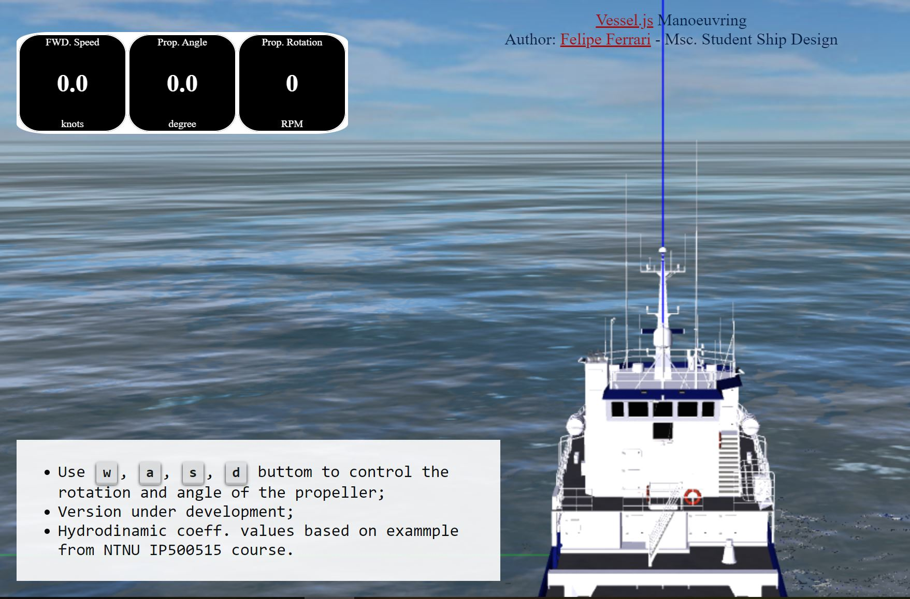
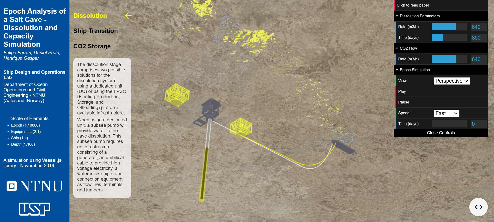
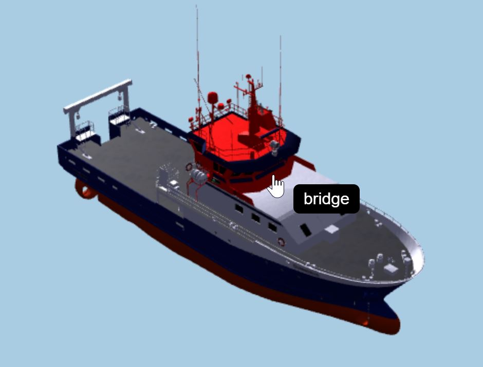
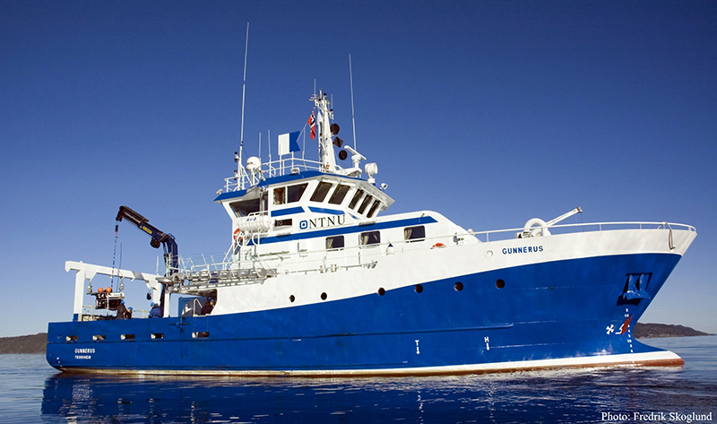
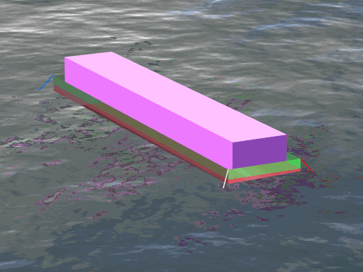

I am a versatile professional skilled in both numerical simulation and data analysis. My current role as Engineer at Det Norske Veritas (DNV) focuses on applying data science and machine learning knowledge to improve structural assessment under the industry-recognized service Nerves of Steel. I'm also a contributor to the open library Vessel.js for ShipLab.
Photo by Cristina Gottardi on Unsplash (adapted).

Maneuvering simulation using differential equations solvers to calculate a realistic response from the user configuration.
Epoch visualization

Visualization of an offshore epoch for carbon dioxide trapping to elucidate the main points in the operation, with the possibility for user parameters configuration.
Gunnerus Visualization

A visualization for NTNU University ship Gunnerus. The view can be changed between detailed and sketch, allowing the interaction with the main components.
Vessel.js Gunnerus tutorial guide

A complete visual and interactive guide that explains how to use vessel.js library for creating the digital models. The guide shows the steps from the general arrangement and offset table to a maneuverability simulation of the ship.
Simulation of Mooring System using Vessel.js

Selected work in simulation and visualization
My personal portfolio showcases simulations and visualizations developed with my broad range of skills, including examples developed with my ShipLab teammates. The examples explore vessel maneuvering, offshore operations, and mooring systems. Open a project to try the interactive demonstration or follow the Vessel.js tutorial.
On a daily basis, I utilize Python to process large data sources and present the findings in clear and concise dashboards. Additionally, I am responsible for developing and maintaining libraries dedicated to fatigue assessment in the DNV Maritime Advisory Structure.